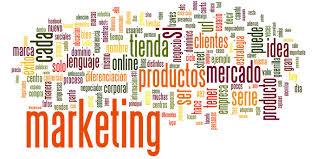
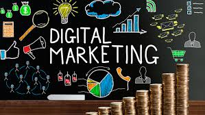

Retos 1-5
Tema no.1 El marketing
Definición breve: Es el conjunto de estrategias y acciones que una empresa usa para identificar, atraer y mantener clientes, satisfaciendo sus necesidades de forma rentable.
Como se aplica en la vida real: Una tienda online usa Instagram y TikTok para mostrar sus productos, atraer seguidores y convertirlos en clientes.
El marketing le permite crear una imagen de marca, llegar al público correcto y aumentar ventas.

Con que tema se relacionan: El Marketing y Los 3 objetivos fundamentales del marketing
Relación: El marketing es el conjunto de actividades que busca captar, satisfacer y fidelizar clientes.
Los objetivos son la razón de ser del marketing, por eso están directamente conectados.

#
Tema no.2 Plan del marketing
Definición breve: Es un documento estratégico que define los objetivos, estrategias, acciones, presupuesto y cronograma para posicionar un producto o marca en el mercado.

Como se aplica en la vida real: Una nueva cafetería elabora un plan de marketing para su apertura: define su público (jóvenes), el presupuesto para redes, promociones de apertura y cómo medirá el éxito.
Esto evita improvisar y guía todas las acciones comerciales.
Con que tema se relacionan: El plan de marketing se construye siguiendo las fases del marketing, desde el análisis del entorno hasta la evaluación de resultados.
Ambos se complementan: el plan es la herramienta y las fases, el proceso para elaborarlo.

#
Tema no.3 Elementos del marketing mix
Son las 4 P del marketing:
Producto: lo que se ofrece al mercado.
Precio: cuánto cuesta.
Plaza (distribución): cómo y dónde se vende.
Promoción: cómo se comunica.
Como se aplica en la vida real: Una marca de shampoo define su producto (anticaspa con ingredientes naturales), su precio competitivo, lo vende en supermercados (plaza) y hace publicidad en YouTube y redes sociales (promoción).
La mezcla ayuda a posicionar el producto en el mercado.
Con que temas se relaciona y por que: Marketing Mix y Plan de Marketing
Relación: El marketing mix (producto, precio, plaza y promoción) forma parte central del plan de marketing, ya que define cómo se llevarán a cabo las estrategias planteadas en el plan.
Es la parte táctica del plan.
#
Tema no.4 Objetivos fundamentales del marketing
Definicion breve: Captar clientes, Satisfacer sus necesidades y retenerlos a largo plazo Ejemplo: Una app ofrece descuentos a nuevos usuarios, escucha sus sugerencias y luego lanza beneficios exclusivos para que sigan usando el servicio.

Como se aplica en la vida real: Una app de entrega a domicilio lanza promociones para captar usuarios, mejora su interfaz para satisfacerlos y da cupones de fidelidad para que sigan usándola.
Así cumple con captar, satisfacer y fidelizar clientes.
Con que temas se relaciona y por que: Los 3 objetivos fundamentales del marketing y Fases del marketing
Relación: Las fases del marketing (análisis, estrategia, ejecución, control) se diseñan para cumplir los objetivos del marketing: captar, satisfacer y fidelizar.
Cada fase está orientada a lograr uno o varios de esos objetivos.

#
Tema no.5 Fases del marketing
Definicion breve: Un emprendimiento analiza la competencia, decide vender por redes, ejecuta la campaña y mide si aumentaron sus ventas.
Ejemplo: una pyme ajusta sus precios tras analizar que los clientes prefieren opciones más baratas.
Como se aplica en la vida real: Un emprendimiento de ropa analiza a su competencia (análisis), decide vender por Instagram (estrategia), lanza una campaña (acción) y revisa los resultados mensuales de ventas (control).
Esto le permite mejorar continuamente.

Con que temas se relaciona y por que: Fases del marketing y El Marketing
Relación: Las fases del marketing son la manera práctica de aplicar el marketing.
Es decir, permiten organizar las acciones para implementar una estrategia de marketing real y efectiva.